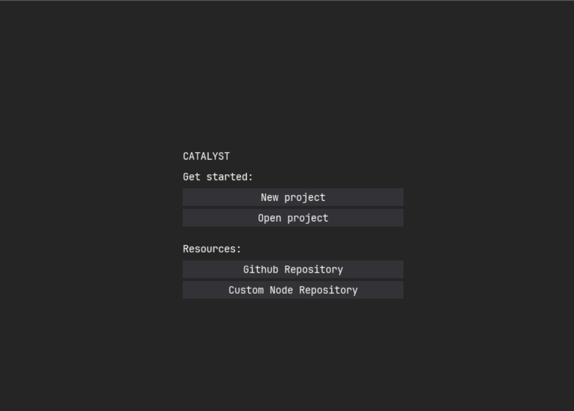
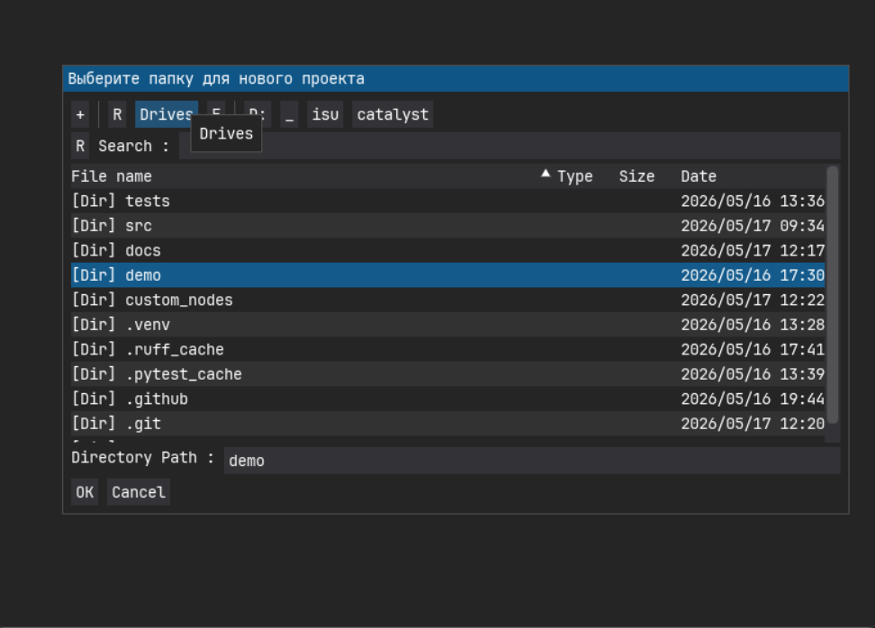
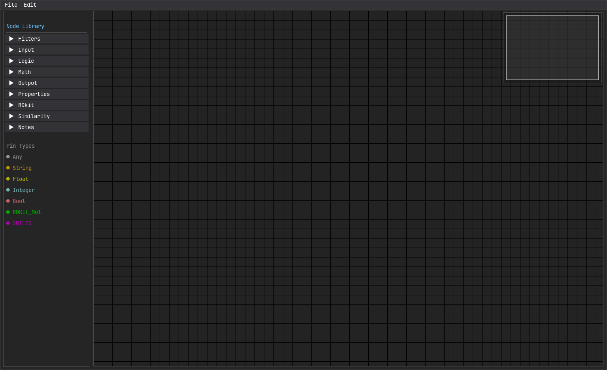
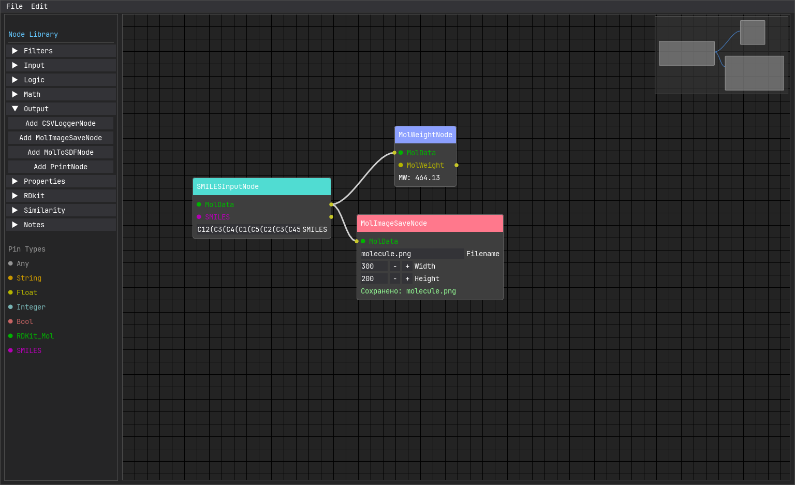

Get started
Установка
Сборка из исходников
- Склонируйте репозиторий:
git clone https://github.com/groknut/catalyst.git
cd catalyst
- Установите зависимости с помощью
uv:
uv sync
- Запустите приложение:
uv run src/app.py
Готовые сборки
~Сейчас находятся в активной разработке~
Конфигурация
YAML‑конфиг автоматически создаётся в ~/.catalyst/config.yaml:
custom_nodes_dir: ~\.catalyst\custom_nodes
log_file: ~\.catalyst\catalyst.log
log_level: INFO
Управление
CLI-приложение (без лаунчера)
| Аргумент | Сокращение | Описание |
|---|---|---|
--help |
-h |
Показать справку и выйти |
--config |
-c |
Путь к YAML‑файлу конфигурации (по умолчанию ~/.catalyst/config.yaml) |
--open |
-o |
Открыть проект из файла .catalyst и сразу перейти в редактор |
--init |
- | Создать новый проект в указанной папке и сразу перейти в редактор |
--list-nodes |
-l |
Вывести список всех доступных узлов и выйти |
GUI-приложение
| Комбинация | Где работает | Действие |
|---|---|---|
| Ctrl+S | Редактор | Сохранить проект |
| Ctrl+Q | Редактор | Выйти из редактора (закрыть программу) |
| Delete | Редактор | Удалить выделенные узлы и связи |
| Esc | Редактор | Выйти из проекта, сохранив проект |
| Ctrl+D | Редактор | Дублировать выделенные узлы |
| Ctrl+Shift+S | Редактор | Экспортировать граф в PNG |
| Tab | Редактор | Быстро создать заметку (StickyNote) |
| Ctrl+Shift+← ↑ → ↓ | Редактор | Переместить выделенные узлы на 20px |
| Ctrl+B | Редактор | Скрыть библиотеку узлов |
Первый проект
Запустите приложение и выберите создать новый проект:

Выберите директорию, в которой будет храниться данные вашего проекта:

После выбора директории проекта внутри создается следующая структура:
📁 проект/
├── 📁 input/ # Исходные данные (SDF, SMILES, CSV…)
├── 📁 output/ # Результаты (PNG, CSV, SDF, отчёты)
├── 📄 README.md # Описание проекта (по желанию)
└── 📄 project.catalyst # Граф узлов и связей (JSON)
И открывается редактор:

Теперь мы можем начать строить химический пайплайн. Для начала мы выведем молекулярный вес и сохраним изображение октанитрокубана.
Его каноническая запись SMILES выглядит следующим образом:
C12(C3(C4(C1(C5(C2(C3(C45[N+](=O)[O-])[N+](=O)[O-])[N+](=O)[O-])[N+](=O)[O-])[N+](=O)[O-])[N+](=O)[O-])[N+](=O)[O-])[N+](=O)[O-]
Выбираем узлы:
- SMILESInputNode - позволяет вводить SMILES запись и переводить ее в
Molобъект (дляrdkit) - MolWeight - вычисляет молекулярный вес молекулы и переводит его в
FLOAT - MolImageSaveNode - позволяет сохранить изображение молекулы
Получается следующий результат:
